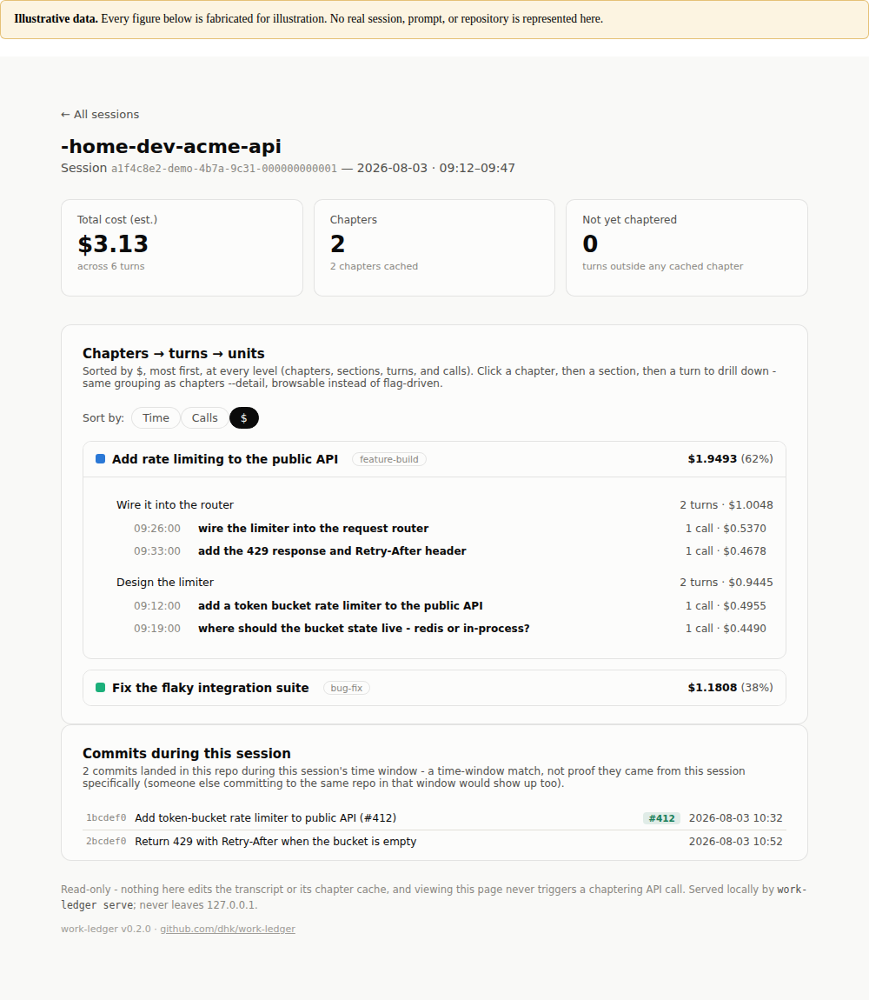
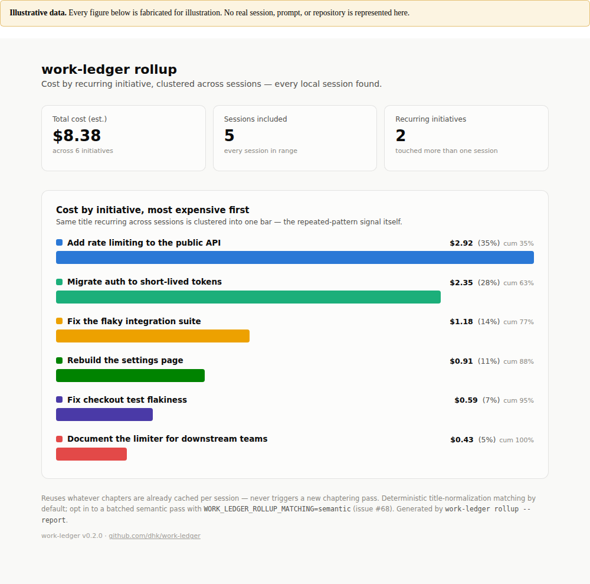

Walkthrough · first run
Turn your own Claude Code transcripts into attributable cost, activity mix, and recurring-work signals. MIT licensed, runs entirely on your machine, and roughly ten minutes from install to seeing your real numbers.
github.com/dhk/work-ledger →
work-ledger serve — drill from a session into chapters, sections, turns and individual calls, with cost at every level. Open the live demo — no install, nothing to configure. Every figure in it is fabricated; no real session is shown.MIT licensed
Read it, fork it, use it at work. No tiers, no seats, no telemetry-for-free-usage bargain. The whole thing is ~11k lines of Python you can audit in an afternoon.
Privacy first
It reads files already on your disk and does the math locally. Nothing is uploaded by default. export writes a local file and has no upload flag — deliberately, and there's no setting to add one.
Transparent
Exactly five network paths exist, all documented and enumerated. Cost figures say when they're estimates, and show ? rather than a confident wrong number when a model has no known rate.
Those aren't marketing lines — they're written into the project's stated non-goals, which include "no undisclosed network behavior" and an exhaustive network-call contract kept in the architecture doc. The boundary section below lists all five paths.
work-ledger reads the session transcripts Claude Code already writes to ~/.claude/projects/ and reports what your work actually cost, where the time and tokens went, and which patterns keep recurring.
It is a reader. It doesn't instrument your sessions, doesn't run a collector, and doesn't need a service. Everything below runs against files that already exist on your disk.
Not a team or org observability product — it's scoped to one person inspecting their own usage. Cost figures are estimates from a pricing table, not itemized billing; Anthropic doesn't expose per-run dollars for plan-included usage.
Almost all of work-ledger needs no API key at all. Exactly one feature does: chaptering, the pass that groups your prompts into named initiatives by sending short snippets to Haiku.
That distinction shapes your whole first hour, so every command in this document is marked:
Reads local files, does local math. No network call, no credentials, no cost. This is most of the tool.
Makes a Haiku call using your credentials. Fractions of a cent to a few cents per session, and the CLI prints what each pass cost.
You can satisfy the credential requirement four ways: an ANTHROPIC_API_KEY, an ANTHROPIC_AUTH_TOKEN, an ant auth login profile on disk — a subscription credential works; you don't have to paste an API key — or you can skip the hosted API entirely by running chaptering against a local Ollama model, where cost is always $0 and snippets never leave your machine.
Needs Python 3.10+ and some existing Claude Code transcripts to read.
# published package $ python3 -m pip install --user work-ledger # inside an active venv, drop --user
You need 0.2.0 or newer. The 0.1.0 release predates twelve of the commands below — including most of the credential-free ones — so on 0.1.0 half this document describes a CLI you don't have.
$ work-ledger about # reports the version you actually installed
If you land on something older, install from source instead. Use uv or pipx rather than python3 -m venv, which fails on a stock Ubuntu box without python3-venv:
$ git clone https://github.com/dhk/work-ledger.git $ cd work-ledger && uv venv && uv pip install -e .
In this order — cheapest orientation first, strongest surface second. All six are free and need no credentials.
work-ledger sessions --top 10 FreeStart here. A cost-ranked table of every session on your machine: project, last active, turns, first and last prompt, cost. It's how you find the session you actually care about before drilling into anything.
work-ledger serve FreeThe strongest surface, and the one to show someone if you only show them one thing. A local read-only web UI, bound to 127.0.0.1 — there is no --host flag, by design.
Browse sessions → chapters → turns → units, sortable by cost, recency, duration or tokens, with the sort cascading through every level. It also correlates each session's working directory against your local git log to show "Commits during this session" — no GitHub API, no token.
$ work-ledger serve --port 8791 --top 20
work-ledger activity FreeCost grouped by kind of work rather than by initiative — Tool: Bash, Tool: Read, Direct response (no tool call). The fastest way to see whether your spend is going into thinking or into mechanical tool loops. Add --report to write a standalone HTML file.
work-ledger trend FreeCost bucketed by day or week across every session, with a sparkline. This is the "is my spend going up" view.
work-ledger timeline --summary FreeA different axis from cost: how your practice changed. Tool, skill and subagent mix over time, plus a plain-language narrative of what shifted. The approach-mix panel stays empty until you've run chaptering — it'll point you at timeline backfill.
work-ledger limits --once FreeRolling 5-hour token totals across all sessions — the "why did I hit my session limit" view that started the project. Honest about itself: the threshold is a self-calibrated estimate, not an official number. Next time Claude Code tells you you've hit the limit, check this and save the reading with --set-threshold.
Everything above answers "what did this cost". Chaptering answers "what was I working on" — and it's the one axis that needs credentials, because grouping prompts into initiatives is a judgement call, not arithmetic.
| Command | What it gives you | |
|---|---|---|
chapters |
Your session grouped into named initiatives, with cost per initiative | Needs key |
rollup |
The same initiative clustered across sessions — total cost per recurring piece of work | Needs key |
waste --cross-session |
Repeated reads and near-identical work compared across every session of an initiative | Needs key |
waste |
The same recurring-work mining, but within a single session | Free |
miso |
"Make it so" — chaptering plus reports end-to-end in one command | Needs key |

rollup --report — the same initiative totalled across every session it touched. Open it. Illustrative figures.Chapter results are cached and frozen per session in a <session-id>.chapters.json file beside the transcript. Re-runs only pay for genuinely new turns, and an existing chapter is never re-titled or re-charged — even if later turns show it was mislabeled.
chapters, miso, timeline backfill, and rollup --semantic all make a paid call — expected from the names. The one that catches people is recommend, which runs a chaptering pass too.
It does tell you: the banner reads "local-only heuristics … no extra API call beyond chaptering itself" — and chaptering itself is the paid part. Accurate, but easy to read as "this is free." It prints what the pass cost afterward.
? in the cost column means "no rate for this model"$0.00 for a model it can't price. The note under the table names which model, so the fix is one line. Worth knowing because claude-opus-5 was missing this way until 0.2.0, which left ~99% of recent turns unpriced.isSidechain entries rather than separate files, those entries are skipped — the tool prints a Warning: line when this happens. Skill follow-on work is also only attributed to the invoking call, not to everything the skill drove.pip install "work-ledger[report]" then playwright install chromium. HTML needs nothing, and --format png fails with a clear message rather than silently degrading.Worth knowing before you run it, and enough to clean up afterward.
| Path | What |
|---|---|
<session>.chapters.json | Frozen chapter cache, written beside each transcript under ~/.claude/projects/ |
~/.config/work-ledger/history.db | Local sqlite session history (only when you run history sync) |
~/.config/work-ledger/limits_threshold.json | Your calibrated limit threshold |
~/.config/work-ledger/rollup_presets.json | Saved rollup flag bundles |
./work-ledger-*.html | Generated reports, written to the current directory |
Parsing, cost math, activity, trends, deterministic rollups, exports, reports and the local web UI are all local computation. The complete list of ways anything leaves your machine:
patterns enable plus configuration.--semantic.Content only ever leaves in paths 1, 2 and 5 (snippets) and 4 (findings text). Paths 3–5 are off until you turn them on. export writes a local file and has no upload flag at all.